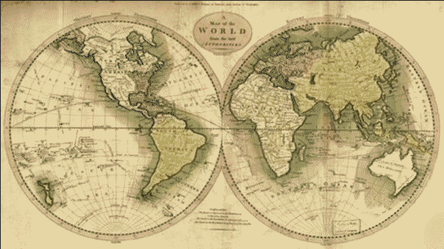

2016/02/01: Ruby Enumerables Map Method
In this post I'm going to discuss the usefulness of the Ruby Enumerables method called "map".
When I first encountered map, it was around the time of reading and learning about a similar method called "each". If you have a list of items, you can read each item and do "something" with it. In our example, lets consider a list of groceries:
groceries = %w{ apples bread cereal cheese mayo milk soda }
=> ["apples", "bread", "cereal", "cheese", "mayo", "milk", "soda"]
Let's say you want to view the list and capitalize the first letter. You can use "each" to iterate through each element and "do something" with it, in this case, we'll capitalize it.
groceries.each{|item| item.capitalize}
=> ["apples", "bread", "cereal", "cheese", "mayo", "milk", "soda"]
Hey! That didn't do ANYTHING like I thought. I got no capitals and just the same array back. Well, it turns out each is non-destructive and it outputs its original item. To output something, we could try printing it out. Notice I'm just adding "p" in front of "item.capitalize".
groceries.each{|item| p item.capitalize}
"Apples"
"Bread"
"Cereal"
"Cheese"
"Mayo"
"Milk"
"Soda"
=> ["apples", "bread", "cereal", "cheese", "mayo", "milk", "soda"]
Cool! But notice that ultimately at the very bottom, it's still just returning the original elements. That means if I tried to save off the capitalized letters into a new array "new_list" like this...
new_list = groceries.each{|item| p item.capitalize}
"Apples"
"Bread"
"Cereal"
"Cheese"
"Mayo"
"Milk"
"Soda"
=> ["apples", "bread", "cereal", "cheese", "mayo", "milk", "soda"]
p new_list
["apples", "bread", "cereal", "cheese", "mayo", "milk", "soda"]
=> ["apples", "bread", "cereal", "cheese", "mayo", "milk", "soda"]
... printing "new_list" reveals that I have a copy of the original array content and NOT the modified capitalized version. Hmm, what to do? The answer lies in map. Map will return a new array with the expression result of its code-block. Let's rework our example to use map instead of each.
groceries.map{|item| item.capitalize}
=> ["Apples", "Bread", "Cereal", "Cheese", "Mayo", "Milk", "Soda"]
new_list = groceries.map{|item| item.capitalize}
=> ["Apples", "Bread", "Cereal", "Cheese", "Mayo", "Milk", "Soda"]
p new_list
["Apples", "Bread", "Cereal", "Cheese", "Mayo", "Milk", "Soda"]
=> ["Apples", "Bread", "Cereal", "Cheese", "Mayo", "Milk", "Soda"]
p groceries
["apples", "bread", "cereal", "cheese", "mayo", "milk", "soda"]
=> ["apples", "bread", "cereal", "cheese", "mayo", "milk", "soda"]
As you can see, map outputs the modifications as a new array without overwriting grocerie's original array and it allows saving the new array to new_list. Awesome, right?! Until next time. -- JLH
